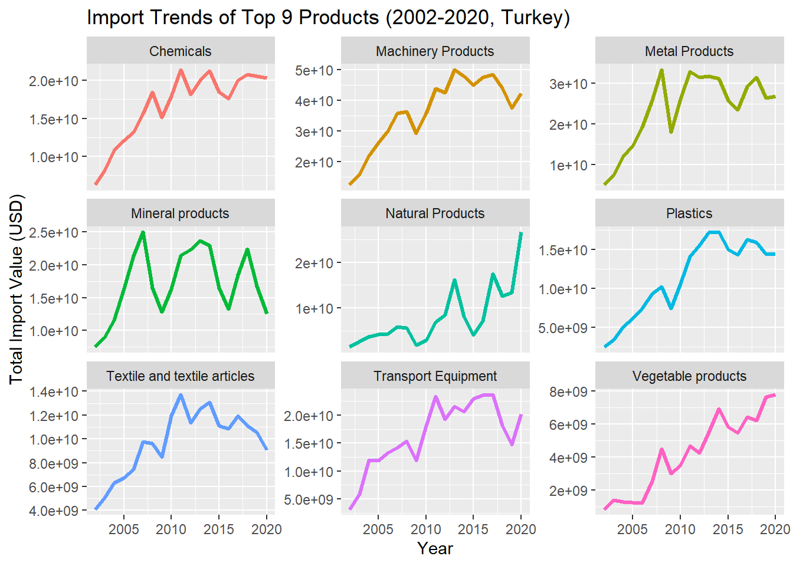

3.1 Introduction: Exploratory Data Analysis on WITS data
World Integrated Trade Solution (WITS) emerges as a pivotal platform, offering a comprehensive view of international trade dynamics, with a particular focus on Turkey from 2002 to 2020. This powerful tool aggregates data from diverse sources to furnish users with valuable insights into Turkey’s merchandise trade, tariffs, and non-tariff measures during this specific period. With an expansive database, WITS facilitates informed decision-making and strategic planning for researchers, policymakers, and businesses interested in Turkey’s trade landscape.
Embarking on an Exploratory Data Analysis (EDA) journey within WITS involves loading datasets, cleaning data, and employing statistical and visual analyses specific to Turkey’s trade from 2002 to 2020. This process unveils trade patterns, identifies trends, and provides actionable insights, enabling stakeholders to navigate the complexities of Turkey’s trade dynamics during this crucial timeframe. The synergy between WITS and EDA empowers users to make informed decisions and strategic choices, fostering a more interconnected and informed landscape for Turkey’s economy and trade.
3.2 Step 1: Load Required Libraries
Code
library(tidyverse)
── Attaching core tidyverse packages ──────────────────────── tidyverse 2.0.0 ──
✔ dplyr 1.1.4 ✔ readr 2.1.4
✔ forcats 1.0.0 ✔ stringr 1.5.1
✔ ggplot2 3.4.4 ✔ tibble 3.2.1
✔ lubridate 1.9.3 ✔ tidyr 1.3.0
✔ purrr 1.0.2
── Conflicts ────────────────────────────────────────── tidyverse_conflicts() ──
✖ dplyr::filter() masks stats::filter()
✖ dplyr::lag() masks stats::lag()
ℹ Use the conflicted package (<http://conflicted.r-lib.org/>) to force all conflicts to become errors
Attaching package: 'kableExtra'
The following object is masked from 'package:dplyr':
group_rows
Code
library(DT)
Description: Loading necessary libraries provides access to functions and tools that simplify data manipulation and visualization. dplyr is helpful for data wrangling, and ggplot2 is excellent for creating informative and visually appealing plots.
3.3 Step 2: Load Datasets
Code
# Load the datasetsloaded_datasets <-readRDS("wits_data.rds")read_wits_turkey_data_only <- loaded_datasets$wits_turkey_data_onlyread_wits_turkey_data_with_partners <- loaded_datasets$wits_turkey_data_with_partners
Description: Loading datasets is the initial step in any data analysis. It allows us to bring in the data that we’ll be working with throughout the analysis.
year reporter_iso reporter_name commodity_code
Min. :2002 Length:90663 Length:90663 Length:90663
1st Qu.:2006 Class :character Class :character Class :character
Median :2011 Mode :character Mode :character Mode :character
Mean :2011
3rd Qu.:2016
Max. :2020
commodity_name section_code section_name trade_value_usd_imp
Length:90663 Length:90663 Length:90663 Min. :0.000e+00
Class :character Class :character Class :character 1st Qu.:4.259e+05
Mode :character Mode :character Mode :character Median :3.138e+06
Mean :3.836e+07
3rd Qu.:1.574e+07
Max. :4.073e+10
trade_value_usd_exp
Min. :0.000e+00
1st Qu.:9.152e+04
Median :1.150e+06
Mean :2.612e+07
3rd Qu.:8.788e+06
Max. :1.334e+10
year reporter_iso reporter_name partner_iso
Min. :2002 Length:3887005 Length:3887005 Length:3887005
1st Qu.:2008 Class :character Class :character Class :character
Median :2013 Mode :character Mode :character Mode :character
Mean :2012
3rd Qu.:2017
Max. :2020
partner_name commodity_code commodity_name section_code
Length:3887005 Length:3887005 Length:3887005 Length:3887005
Class :character Class :character Class :character Class :character
Mode :character Mode :character Mode :character Mode :character
section_name trade_value_usd_imp trade_value_usd_exp
Length:3887005 Min. :0.000e+00 Min. :0.000e+00
Class :character 1st Qu.:0.000e+00 1st Qu.:4.230e+02
Mode :character Median :0.000e+00 Median :8.367e+03
Mean :8.947e+05 Mean :6.093e+05
3rd Qu.:1.157e+04 3rd Qu.:8.157e+04
Max. :1.749e+10 Max. :6.528e+09
Description: Checking the structure and summary of the datasets provides an understanding of the variables, data types, and basic statistics. This helps identify potential issues and informs subsequent cleaning and analysis steps.
Description: Cleaning the data involves addressing missing values and outliers. It ensures that the data is reliable and ready for further analysis.
3.6 Step 5: Exploratory Data Analysis (EDA)
3.6.1 Exports & Imports Analysis
Code
total_exports <- read_wits_turkey_data_only %>%group_by(year) %>%summarize(total_exports =sum(trade_value_usd_exp))total_imports <- read_wits_turkey_data_only %>%group_by(year) %>%summarize(total_imports =sum(trade_value_usd_imp))# Visualize exports and imports over the yearsggplot() +geom_line(data = total_exports, aes(x = year, y = total_exports, color ="Exports"), size =1.5) +geom_line(data = total_imports, aes(x = year, y = total_imports, color ="Imports"), size =1.5) +labs(title ="Turkey's Exports and Imports Over the Years", x ="Year", y ="Trade Value (USD)")
Key Findings: Turkey has experienced a consistent upward trajectory in both exports and imports from 2002 to 2020, as measured in USD values, influenced by factors such as price dynamics, quantities, and currency exchange rates. Notably, there was a slowdown in total trade values in 2009, coinciding with the global financial crisis of 2008. The decline in 2015 can be attributed to the implementation of quantitative easing in Europe, implemented after European debt crisis and recession, leading to an increased money supply in the region and devaluation of the EUR against USD. Further analysis within this EDA reveals the EU as a crucial economic partner for Turkey, and EUR/USD exchange rate playing a significant role in affecting Turkey’s export values. Up until the onset of the global COVID-19 crisis in 2020, Turkey consistently increased its export values. Contrary to exports, import value has increased in 2020 as an indicator of increased dependency.
Let’s conduct a more in-depth analysis to determine the product categories in which Turkey holds a strong position in its exports.
Trend Analysis of Exports Value by top 9 product categories
export_plot_data <- read_wits_turkey_data_only %>%group_by(section_name) %>%summarize(total_export =sum(trade_value_usd_exp)) %>%top_n(10)# Truncate section names to the first 20 charactersexport_plot_data$truncated_name <-str_trunc(export_plot_data$section_name, 50)# Get distinct truncated names for colorscolor_names <-unique(export_plot_data$truncated_name)# Generate a limited number of distinct colorscolors <-brewer.pal(length(color_names), "Set3")ggplot(data = export_plot_data, aes(x =reorder(section_name, -total_export), y = total_export, fill = truncated_name)) +geom_bar(stat ="identity", color ="black") +labs(title ="Top 10 Diversity of Exported Products (2002-2020, Turkey)", x ="Products", y ="Total Export Value (USD)") +geom_hline(yintercept =0, linetype ="solid", color ="black", size =0.5) +# Add horizontal line at y = 0theme(axis.text.x =element_blank(), axis.title.x =element_blank(), legend.position ="bottom") +guides(fill =guide_legend(nrow =5)) +scale_fill_manual(values =setNames(colors, color_names), name ="")
Key Findings: Textiles and apparel, machinery and equipment, vehicles and associated equipment, as well as base metals and mineral products, constitute significant contributors to Turkey’s export revenue. Findings from a study conducted by the Turkey Exporters Assembly (TEA), which defines the top 1000 exports, align with our observations. Prominent exporter companies in Turkey are engaged in the export of vehicles and spare parts, home appliances, and the export of base metals and mineral products. Examples include Ford Otosan, Arcelik, Erdemir and Kibar Holding. The study also highlights the presence of textile manufacturers on the list, although they may not be top-rated, indicating a higher number of companies in this category compared to others in Turkey. Source of TEA’s study: https://tim.org.tr/en/default.
Let’s examine the trend analysis of these product categories from 2002 to 2020
Code
top_exports_products <- read_wits_turkey_data_only %>%group_by(section_name) %>%summarize(total_export =sum(trade_value_usd_exp)) %>%top_n(9)%>%na.omit() top_exports_products <- top_exports_products %>%mutate(section_name =case_when(str_detect(section_name, "^Machinery and mechanical appliances") ~"Machinery Products",str_detect(section_name, "^Base metals") ~"Metal Products",str_detect(section_name, "^Natural or") ~"Natural Products",str_detect(section_name, "^Vehicles,") ~"Transport Equipment",str_detect(section_name, "^Plastics and articles") ~"Plastics",str_detect(section_name, "^Product of the chemicals") ~"Chemicals",str_detect(section_name, "^Prepared foodstuffs,") ~"Foodstuffs and Tobacco",TRUE~as.character(section_name) ) )read_wits_turkey_data_with_partners_edit <- read_wits_turkey_data_with_partners%>%mutate(section_name =case_when(str_detect(section_name, "^Machinery and mechanical appliances") ~"Machinery Products",str_detect(section_name, "^Base metals") ~"Metal Products",str_detect(section_name, "^Natural or") ~"Natural Products",str_detect(section_name, "^Vehicles,") ~"Transport Equipment",str_detect(section_name, "^Plastics and articles") ~"Plastics",str_detect(section_name, "^Product of the chemicals") ~"Chemicals",str_detect(section_name, "^Prepared foodstuffs,") ~"Foodstuffs and Tobacco",TRUE~as.character(section_name) ) )# Filter the data with the selected top import productsexport_plot_data <- read_wits_turkey_data_with_partners_edit %>%filter(section_name %in% top_exports_products$section_name) %>%group_by(year, section_name) %>%summarize(total_export =sum(trade_value_usd_exp)) %>%ungroup() # Create the plot with geom_pointggplot(data = export_plot_data, aes(x = year, y = total_export/1000000, color = section_name)) +geom_line(size =1.2) +facet_wrap(~section_name, scales ="free_y", ncol =3, labeller =labeller(NULL)) +labs(title ="Export Trends of Top 9 Products (2002-2020, Turkey)", x ="Year", y ="Total Export Value (mn USD)") +theme(legend.position ="none") # Remove legend
Key Findings: Fluctuations in natural and mineral product exports require further investigation. Initial thoughts focused on factors like steel industry dynamics, potential sanctions and commodity crises. Additionally, fluctuations in Turkey’s gold exports and imports which exhibited up and downs over recent years are also considered.In 2020, a downward trend was noted in every product category, except for essential items such as vegetable products, plastics, and foodstuff, which exhibited inelastic demand and remained resilient during the pandemic.
Let’s conduct a more in-depth analysis to determine the product categories in which Turkey is most dependent on its imports.
Trend Analysis of Import Value by top 9 product categories
imported_plot_data <- read_wits_turkey_data_only %>%group_by(section_name) %>%summarize(total_import =sum(trade_value_usd_imp)) %>%top_n(10)# Truncate section names to the first 20 charactersimported_plot_data$truncated_name <-str_trunc(imported_plot_data$section_name, 50)# Get distinct truncated names for colorscolor_names <-unique(imported_plot_data$truncated_name)# Generate a limited number of distinct colorscolors <-brewer.pal(length(color_names), "Set3")ggplot(data = imported_plot_data, aes(x =reorder(section_name, -total_import), y = total_import, fill = truncated_name)) +geom_bar(stat ="identity", color ="black") +labs(title ="Top 10 Diversity of Imported Products (2002-2020, Turkey)", x ="Products", y ="Total Import Value (USD)") +geom_hline(yintercept =0, linetype ="solid", color ="black", size =0.5) +# Add horizontal line at y = 0theme(axis.text.x =element_blank(), axis.title.x =element_blank(), legend.position ="bottom") +guides(fill =guide_legend(nrow =5)) +scale_fill_manual(values =setNames(colors, color_names), name ="")
Key Findings: Machinery and equipment, base metals and their articles, mineral products, chemicals as well as vehicles and associated equipment constitute the primary import categories contributing to Turkey’s import value. There is a substantial import of investment goods, components and parts, along with unprocessed materials used in industrial activities. This highlights Turkey’s dependence on a significant influx of intermediate goods.
Based on these observations, there is a need for a strategic focus on R&D investments and incentives for a highly skilled workforce. This is crucial for adoption of a new economic model, which Turkey could leverage to reduce its reliance on intermediate goods.
Let’s examine the trend analysis of these product categories from 2002 to 2020
Code
top_import_products <- read_wits_turkey_data_only %>%group_by(section_name) %>%summarize(total_import =sum(trade_value_usd_imp)) %>%top_n(10)%>%na.omit() top_import_products <- top_import_products %>%mutate(section_name =case_when(str_detect(section_name, "^Machinery and mechanical appliances") ~"Machinery Products",str_detect(section_name, "^Base metals") ~"Metal Products",str_detect(section_name, "^Natural or") ~"Natural Products",str_detect(section_name, "^Vehicles,") ~"Transport Equipment",str_detect(section_name, "^Plastics and articles") ~"Plastics",str_detect(section_name, "^Product of the chemicals") ~"Chemicals",TRUE~as.character(section_name) ) )read_wits_turkey_data_with_partners_edit <- read_wits_turkey_data_with_partners%>%mutate(section_name =case_when(str_detect(section_name, "^Machinery and mechanical appliances") ~"Machinery Products",str_detect(section_name, "^Base metals") ~"Metal Products",str_detect(section_name, "^Natural or") ~"Natural Products",str_detect(section_name, "^Vehicles,") ~"Transport Equipment",str_detect(section_name, "^Plastics and articles") ~"Plastics",str_detect(section_name, "^Product of the chemicals") ~"Chemicals",TRUE~as.character(section_name) ) )# Filter the data with the selected top import productsimport_plot_data <- read_wits_turkey_data_with_partners_edit %>%filter(section_name %in% top_import_products$section_name) %>%group_by(year, section_name) %>%summarize(total_import =sum(trade_value_usd_imp)) %>%ungroup() # Create the plot with geom_pointggplot(data = import_plot_data, aes(x = year, y = total_import, color = section_name)) +geom_line(size =1.2) +facet_wrap(~section_name, scales ="free_y", ncol =3, labeller =labeller(NULL)) +labs(title ="Import Trends of Top 9 Products (2002-2020, Turkey)", x ="Year", y ="Total Import Value (USD)") +theme(legend.position ="none") # Remove legend
Key Findings: First slowdown in imports of all product categories is observed in 2009 reflecting ongoing effects of global crisis in 2008. Import values of mineral and natural products fluctuated during analysis period, requires further investigation as it has been mentioned in exports section. Analysis for product categories of vegetables and plastics under export section remains applicable for imports, showcasing inelastic demand during pandemic.
3.6.2 Trade Partnership Analysis
Ensuring a broad range of diverse trade partners is crucial for any country in order to diversify its export and import streams and serves as a risk mitigation strategy, particularly in the face of any possible geopolitical challenges.
This chart aims to assess Turkey’s revenue generation capacity by scrutinizing top 10 product category. The focus is to understand diversity of Turkey’s trade partners, identifying leading revenue generators in 2020 and evaluating the performance of these revenue categories over the past five years.
Code
# Step 1: Find the top 10 section_name based on trade_valuetop_sections <- read_wits_turkey_data_with_partners %>%group_by(section_name) %>%summarize(total_export =sum(trade_value_usd_exp)) %>%arrange(desc(total_export)) %>%head(15)# Step 2: Filter the dataframe to include only the top 10 section_namesread_wits_turkey_data_with_partners_top10 <- read_wits_turkey_data_with_partners %>%filter(section_name %in% top_sections$section_name)# Step 3: Count partner_names corresponding to the top 10 section_names in the entire dataframeread_wits_turkey_data_with_partners_top10 <- read_wits_turkey_data_with_partners_top10 %>%group_by(section_name) %>%mutate(partner_count =n_distinct(partner_name)) %>%ungroup()read_wits_turkey_data_with_partners_top10 <- read_wits_turkey_data_with_partners_top10 %>%group_by(section_name) %>%mutate(cagr = ((trade_value_usd_exp[2020]/trade_value_usd_exp[2015])^(1/5)-1)*100) %>%ungroup()read_wits_turkey_data_with_partners_top10 <- read_wits_turkey_data_with_partners_top10 %>%filter(year ==2020) %>%group_by(section_name) %>%mutate(total_trade_value_exp_2020 =sum(trade_value_usd_exp)/1000000) %>%ungroup()# Truncate section names to the first 20 charactersread_wits_turkey_data_with_partners_top10$truncated_name <-str_trunc(read_wits_turkey_data_with_partners_top10$section_name, 35)# Get distinct truncated names for colorscolor_names <- read_wits_turkey_data_with_partners_top10$truncated_nameggplot(read_wits_turkey_data_with_partners_top10, aes(x = partner_count, y = total_trade_value_exp_2020, size = cagr, color = truncated_name)) +geom_point(alpha =0.7) +scale_size_continuous(range =c(3, 15)) +scale_y_continuous(limits =c(min(read_wits_turkey_data_with_partners_top10$total_trade_value_exp_2020), max(read_wits_turkey_data_with_partners_top10$total_trade_value_exp_2020) +5)) +# adjust y-axis scalescale_x_continuous(limits =c(min(read_wits_turkey_data_with_partners_top10$partner_count), max(read_wits_turkey_data_with_partners_top10$partner_count) +5)) +# adjust x-axis scalescale_color_manual(values = scales::hue_pal()(length(unique(read_wits_turkey_data_with_partners_top10$section_name)))) +# Use a different color palettelabs(title ="Export Partner and Revenue Growth Analysis for Top 10 Product Categories",x ="Number of Export Countries",y ="Total Export Revenue mn USD (2020) ",size ="5 year CAGR", color ="Section Name") +theme_minimal () +theme(legend.position ="right", legend.box ="horizontal", legend.margin =margin(t =0, r =0, b =0, l =0) )
*Each bubble represents 5 year CAGR (2015-2020) for each product category
Key Findings: Through this analysis, we have identified that Turkey engages with more than 200 distinct export partners across its top 10 product categories, showcasing a diversified revenue stream. As previously noted in the above sections of this EDA; Textiles and Apparel, Vehicles and Associated Equipment and Base Metals and Mineral Products stand out as significant contributors to Turkey’s export revenue. Despite a trend of non-growth or decline in revenue generation, these categories exhibited the highest revenue generation in 2020. Conversely, Mineral Products, Miscellaneous Manufactured Articles, Vegetable Products and Plastics demonstrated an increased capacity for revenue generation over the last five years, albeit still trailing behind the primary product categories mentioned earlier.
This chart aims to assess Turkey’s dependency on imports for its top 10 product categories and to understand diversity of Turkey’s trade partners, identifying leading import sources in 2020 and evaluating the performance of these sources over the past five years.
Code
# Step 1: Find the top 10 section_name based on trade_valuetop_sections <- read_wits_turkey_data_with_partners %>%group_by(section_name) %>%summarize(total_import =sum(trade_value_usd_imp)) %>%arrange(desc(total_import)) %>%head(15)# Step 2: Filter the dataframe to include only the top 10 section_namesread_wits_turkey_data_with_partners_top10 <- read_wits_turkey_data_with_partners %>%filter(section_name %in% top_sections$section_name)# Step 3: Count partner_names corresponding to the top 10 section_names in the entire dataframeread_wits_turkey_data_with_partners_top10 <- read_wits_turkey_data_with_partners_top10 %>%group_by(section_name) %>%mutate(partner_count =n_distinct(partner_name)) %>%ungroup()read_wits_turkey_data_with_partners_top10 <- read_wits_turkey_data_with_partners_top10 %>%group_by(section_name) %>%mutate(cagr = ((trade_value_usd_imp[2020]/trade_value_usd_imp[2015])^(1/5)-1)*100) %>%ungroup()read_wits_turkey_data_with_partners_top10 <- read_wits_turkey_data_with_partners_top10 %>%filter(year ==2020) %>%group_by(section_name) %>%mutate(total_trade_value_imp_2020 =sum(trade_value_usd_imp)/1000000) %>%ungroup()# Truncate section names to the first 50 charactersread_wits_turkey_data_with_partners_top10$truncated_name <-str_trunc(read_wits_turkey_data_with_partners_top10$section_name, 50)# Get distinct truncated names for colorscolor_names <- read_wits_turkey_data_with_partners_top10$truncated_nameggplot(read_wits_turkey_data_with_partners_top10, aes(x = partner_count, y = total_trade_value_imp_2020, size = cagr, color = truncated_name)) +geom_point(alpha =0.7) +scale_size_continuous(range =c(3, 15)) +scale_y_continuous(limits =c(min(read_wits_turkey_data_with_partners_top10$total_trade_value_imp_2020), max(read_wits_turkey_data_with_partners_top10$total_trade_value_imp_2020) +5)) +# adjust y-axis scalescale_x_continuous(limits =c(min(read_wits_turkey_data_with_partners_top10$partner_count), max(read_wits_turkey_data_with_partners_top10$partner_count) +5)) +# adjust x-axis scalescale_color_manual(values = scales::hue_pal()(length(unique(read_wits_turkey_data_with_partners_top10$section_name)))) +# Use a different color palettelabs(title ="Import Partner and Import Value Growth Analysis for Top 10 Product Categories",x ="Number of Importers",y ="Total Import mn USD (2020) ",size ="5 year CAGR", color ="Section Name") +theme_minimal () +theme(legend.position ="right", legend.box ="horizontal", legend.margin =margin(t =0, r =0, b =0, l =0) )
Key Findings: Through this analysis, we have identified that Turkey’s dependency is diversified and country engages with more than 200 distinct import partners across its top 10 product categories, excluding natural product categories (mostly composed of semi-precious products, stones and powder that may be used for construction industry). Despite declining trend, machinery and mechanical appliances exhibited the highest import stream in 2020 of which has the highest number of trade partners. Conversely, plastics and chemicals demonstrated an increased import value over the last five years, albeit still trailing behind the primary product categories mentioned earlier.
Turkey showcases a diverse range of trading partners. Let’s explore further to identify those that are among the top 10 for both exports and imports.
Code
top_partners <- read_wits_turkey_data_with_partners %>%group_by(partner_name) %>%summarize(total_trade =sum(trade_value_usd_exp + trade_value_usd_imp)/19000000) %>%arrange(desc(total_trade)) %>%top_n(10)# Get a color palette from RColorBrewerpartner_colors <-brewer.pal(length(top_partners$partner_name), "Set3")# Visualize top trading partnersggplot(data = top_partners, aes(x =reorder(partner_name, -total_trade), y = total_trade, fill = partner_name)) +geom_bar(stat ="identity", color ="black") +labs(title ="Top 10 Trading Partners (2002-2022)", x ="Partner", y ="Average Trade Value (Exp+Imp) (mnUSD)") +geom_hline(yintercept =0, linetype ="solid", color ="black", size =0.5) +# Add horizontal line at y = 0theme(axis.text.x =element_text(angle =90, hjust =1)) +scale_fill_manual(values = partner_colors)+theme(legend.position ="none")

Key Findings: Turkey has strong relations with neighboring countries and major economies such as China and the USA. The chart presented here illustrates the top 10 trade partners along with the average annual bilateral trading value for each country during analysis period (2002-2020).
Warning
Notice: Above chart does not represent net trading value and Turkey’s trading position. Trading values are calculated by summing up total export and import values for each year and results indicate average values during analysis period.
Let’s delve deeper into the analysis by specifically examining Turkey’s net exporter/importer position, the trading partners with whom Turkey increased its relations within the analysis period and on which the product categories Turkey is most dependent for its importers and holding a strong export position.
Code
# Calculate total trade for each partnerpartners <- read_wits_turkey_data_with_partners %>%group_by(partner_name) %>%summarize(total_trade =sum(trade_value_usd_exp + trade_value_usd_imp)) %>%arrange(desc(total_trade)) %>%top_n(10)# Calculate total export and import for each top partnertop_partners <- read_wits_turkey_data_with_partners %>%filter(partner_name %in% partners$partner_name) %>%group_by(partner_name) %>%summarize(total_export =sum(trade_value_usd_exp),total_import =sum(trade_value_usd_imp)) %>%arrange(desc(total_export + total_import)) %>%top_n(10)%>%na.omit() # Calculate the net differencetop_partners <- top_partners %>%mutate(trade_difference = total_export - total_import)%>%na.omit() # Visualize import and export relations with top trading partnersggplot(data = top_partners, aes(x =reorder(partner_name, -total_export - total_import))) +geom_bar(aes(y = total_export, fill ="Export"), stat ="identity", position ="dodge",color ="darkgray", linetype ="dashed" ) +geom_bar(aes(y =-total_import, fill ="Import"), stat ="identity", position ="dodge",color ="darkgray", linetype ="dashed") +geom_bar(aes(y = trade_difference, fill =factor(sign(trade_difference))),stat ="identity", position ="dodge", color ="black", alpha=0.7) +labs(title ="Import and Export Relations with Top 10 Trading Partners",x ="Partner", y ="Total Trade Value (USD)") +scale_fill_manual(values =c("Export"="gray", "Import"="lightgray","1"="skyblue3", "-1"="lightcoral"),name ="",labels =c("Turkey net importer", "Turkey net exporter", "Export", "Import")) +geom_hline(yintercept =0, linetype ="solid", color ="black", size =0.5) +# Add horizontal line at y = 0theme(axis.text.x =element_text(angle =90, hjust =1),legend.position ="top")
Code
# Vector of countries to filterselected_countries <-c("Germany", "Russian Federation", "China", "Italy", "USA", "United Kingdom", "France", "Spain", "Iran", "Iraq")top_partners <- read_wits_turkey_data_with_partners %>%filter(partner_name %in% selected_countries, year %in%2015:2020) %>%group_by(partner_name, year) %>%summarize(total_export =sum(trade_value_usd_exp),total_import =sum(trade_value_usd_imp)) %>%mutate(trade_difference = total_export - total_import)# Create a bar plot to show trade comparison with selected trading partnersggplot(data = top_partners, aes(x =reorder(partner_name, -trade_difference), y = trade_difference/1000000, fill =factor(sign(trade_difference)))) +geom_bar(stat ="identity", position =position_dodge(width =0.8), color ="black", height =1.5) +# Adjust the 'height' parameterfacet_wrap(~year, scales ="free_y", ncol =3) +scale_fill_manual(values =c("lightcoral", "skyblue3"), name ="",labels =c("Turkey net importer", "Turkey net exporter")) +labs(title ="Trade Comparison with Top 10 Trading Partners(2015-2020)",x ="Partner",y ="Trade Difference (Export - Import, mn USD)") +theme(axis.text.x =element_text(angle =90, hjust =1),legend.position ="top")
Key Findings: Turkey predominantly maintains a net importer position among its major trading partners, with the exceptions of the United Kingdom and Iraq on an aggregate level throughout the analysis period. Notably, Turkey exhibits a higher dependency on Russia and China compared to other partners.
The second chart provides a clearer understanding of Turkey’s position for each year during the analysis period. Turkey has transitioned from a net importer to a net exporter for some European countries, such as Spain and France.
To gain a better understanding of the partners with whom Turkey has strengthened its relations the most, let’s examine the chart below, which illustrates the 5-year CAGR in total trade values for each trading partner.
Code
# Replace "YourFirstYear" and "YourEndYear" with the actual years that is selected for the analysisfirst_year <-2015end_year <-2020# Calculate the total trade value for the first and end years for each partnertotal_trade_by_partner <- read_wits_turkey_data_with_partners %>%group_by(partner_name) %>%summarise(total_trade_first =sum(trade_value_usd_imp[year == first_year] + trade_value_usd_exp[year == first_year]),total_trade_end =sum(trade_value_usd_imp[year == end_year] + trade_value_usd_exp[year == end_year]))# Find the top 10 partners based on the total trade valuetop_10_partners <- total_trade_by_partner %>%top_n(10, wt = total_trade_end)# Calculate the percentage changepercentage_change <- top_10_partners %>%mutate(percentage_change = ((total_trade_end/total_trade_first)^(1/5)-1)*100)# Create a lollipop chartggplot(percentage_change, aes(x =reorder(partner_name, percentage_change), y = percentage_change)) +geom_segment(aes(xend =reorder(partner_name, percentage_change), yend =0), color ="skyblue", size =1) +geom_point(color ="red", size =3) +labs(title ="Top 10 Partners: 5 year CAGR growth in Total Trade Value by 2020",x ="Partner",y ="Percentage Change in Total Trade Value") +theme(axis.text.x =element_text(angle =90, hjust =1))
Key Findings: Trade relations with Iraq, special categories that are not well described in the dataset - possibly Iran, USA and Spain have seen increased growth in trade values over the last 5 years. In contrast, relations with Germany, France, and the UK have remained relatively flat.
On which category Turkey was the most export revenue generative, let’s have a look at the below chart:
Code
# Filter data for Iraq, Spain, and USAtrade_data_selected_partners<- read_wits_turkey_data_with_partners %>%filter(partner_name %in%c("Germany","Russian Federation","China", "United Kingdom", "Iraq", "Spain", "USA","Iran", 1))# Add a new column for total tradetrade_data_selected_partners <- trade_data_selected_partners%>%mutate(total_trade_exp = (trade_value_usd_exp)/19000000)# Group by section_name and calculate total trade values for each section_nametotal_trade_values_19_year <- trade_data_selected_partners %>%filter(year >=2002& year <=2020) %>%group_by(section_name, partner_name) %>%summarise(total_exp_value =sum(total_trade_exp))# Filter top 5 section namesfiltered_commodity_data <- total_trade_values_19_year %>%group_by(partner_name) %>%arrange(desc(total_exp_value)) %>%slice_head(n=5)# Truncate section names to the first 20 charactersfiltered_commodity_data$truncated_name <-str_trunc(filtered_commodity_data$section_name, 25)# Set up the color palettecolors <-brewer.pal(length(unique(filtered_commodity_data$truncated_name)), "Set3")# Map colors to truncated section namescolor_mapping <-setNames(colors, unique(filtered_commodity_data$truncated_name))# Use the color_mapping in ggplotggplot(filtered_commodity_data, aes(x = partner_name, y = total_exp_value, fill = truncated_name)) +geom_col() +scale_fill_manual(values = color_mapping) +# Set manual color scalelabs(title ="Average Annual Export Breakdown by Product Category and Partner (2002-2020)",x ="Partner Name", y ="Total Export mn USD",fill ="Sections") +geom_hline(yintercept =0, linetype ="solid", color ="black", size =0.5) +# Add horizontal line at y = 0theme(legend.position ="bottom") +guides(fill =guide_legend(nrow =4))
Key Findings: Major export partners of Turkey imported textile and its articles which are followed by vehicles, aircraft and machinery and mechanical components. Export product categories do not vary significantly among the top export partners, except for China, which notably imports mineral products the most.
On which category Turkey was the dependent, let’s have a look at importers chart:
Code
# Filter data for Iraq, Spain, and USAtrade_data_selected_partners<- read_wits_turkey_data_with_partners %>%filter(partner_name %in%c("Germany","Russian Federation","China", "United Kingdom", "Iraq", "Spain", "USA","Iran", 1))# Add a new column for total tradetrade_data_selected_partners <- trade_data_selected_partners%>%mutate(total_trade_imp = (trade_value_usd_imp)/19000000)# Group by section_name and calculate total trade values for each section_nametotal_trade_values_19_year <- trade_data_selected_partners %>%filter(year >=2002& year <=2020) %>%group_by(section_name, partner_name) %>%summarise(total_imp_value =sum(total_trade_imp))# Filter top 5 section namesfiltered_commodity_data <- total_trade_values_19_year %>%group_by(partner_name) %>%arrange(desc(total_imp_value)) %>%slice_head(n=5)# Truncate section names to the first 20 charactersfiltered_commodity_data$truncated_name <-str_trunc(filtered_commodity_data$section_name, 25)# Set up the color palettecolors <-brewer.pal(length(unique(filtered_commodity_data$truncated_name)), "Set3")# Map colors to truncated section namescolor_mapping <-setNames(colors, unique(filtered_commodity_data$truncated_name))# Use the color_mapping in ggplotggplot(filtered_commodity_data, aes(x = partner_name, y = total_imp_value, fill = truncated_name)) +geom_col() +scale_fill_manual(values = color_mapping) +# Set manual color scalelabs(title ="Average Annual Import Breakdown by Product Category and Partner (2002-2020)",x ="Partner Name", y ="Total Export mn USD",fill ="Sections") +geom_hline(yintercept =0, linetype ="solid", color ="black", size =0.5) +# Add horizontal line at y = 0theme(legend.position ="bottom") +guides(fill =guide_legend(nrow =4))
Key Findings: Turkey’s major trade partners are Russia, Germany and China as previously noted. During EDA, we have realized that energy is not categorized in this dataset of which seems under NA in this illustration. Turkey’s energy dependency to Russia and Iran of which are major natural gas, crude and mineral suppliers of Turkey. Turkey terminated its crude supplies from Iran after 2018 when US imposed sanctions on Iranian products. Examining Turkey’s major imports, it becomes evident that China and Germany play pivotal roles, particularly in the supply of machinery and mechanical components vital for industrial processes. Conversely, Turkey exhibits minimal dependency on textile and vegetable imports, reflecting its advantageous position as a net exporter in these product categories.
3.7 Step 6: Interpretation and Conclusions
From this thorough analysis, critical insights emerge. Turkey’s dependence on energy and natural resources is concentrated, posing a significant risk if relations with Russia and Iran were to deteriorate. A similar vulnerability is observed in machinery and mechanical components, suggesting the need for diversification or incentives to encourage local production. The exposure to Europe, as evidenced in the EDA, underscores a category risk for Turkey. Economic downturns or recessions in Europe significantly impact Turkey’s exports and imports.
While Turkey boasts more than 200 trading partners for both exports and imports, the high revenue-generating product categories lack diversification. Most of the top 10 product categories show stagnant or declining growth in USD values. This signals the importance of exploring new markets and expanding the product portfolio to mitigate risks associated with concentrated trade.
Moreover, the analysis reveals Turkey’s heavy reliance on intermediate goods and a relatively lower emphasis on strategic investments in R&D and incentives for a skilled workforce. This EDA points towards the necessity of adopting a new economic model, one that encourages innovation, reduces dependence on intermediates, and ensures a more sustainable and resilient trade ecosystem.
Source Code
---title: " Exploratory Data Analysis"date: "2023-12-14"format: html: code-fold: true code-tools: true---## Introduction: Exploratory Data Analysis on WITS dataWorld Integrated Trade Solution (WITS) emerges as a pivotal platform, offering a comprehensive view of international trade dynamics, with a particular focus on Turkey from 2002 to 2020. This powerful tool aggregates data from diverse sources to furnish users with valuable insights into Turkey's merchandise trade, tariffs, and non-tariff measures during this specific period. With an expansive database, WITS facilitates informed decision-making and strategic planning for researchers, policymakers, and businesses interested in Turkey's trade landscape.Embarking on an Exploratory Data Analysis (EDA) journey within WITS involves loading datasets, cleaning data, and employing statistical and visual analyses specific to Turkey's trade from 2002 to 2020. This process unveils trade patterns, identifies trends, and provides actionable insights, enabling stakeholders to navigate the complexities of Turkey's trade dynamics during this crucial timeframe. The synergy between WITS and EDA empowers users to make informed decisions and strategic choices, fostering a more interconnected and informed landscape for Turkey's economy and trade.------------------------------------------------------------------------## Step 1: Load Required Libraries```{r}library(tidyverse)library(dplyr)library(ggplot2)library(RColorBrewer)library(ggridges)library(knitr)library(kableExtra)library(DT)```Description: Loading necessary libraries provides access to functions and tools that simplify data manipulation and visualization. dplyr is helpful for data wrangling, and ggplot2 is excellent for creating informative and visually appealing plots.## Step 2: Load Datasets```{r}# Load the datasetsloaded_datasets <-readRDS("wits_data.rds")read_wits_turkey_data_only <- loaded_datasets$wits_turkey_data_onlyread_wits_turkey_data_with_partners <- loaded_datasets$wits_turkey_data_with_partners```Description: Loading datasets is the initial step in any data analysis. It allows us to bring in the data that we'll be working with throughout the analysis.## Step 3: Overview of the Datasets```{r}str(read_wits_turkey_data_only)summary(read_wits_turkey_data_only)str(read_wits_turkey_data_with_partners)summary(read_wits_turkey_data_with_partners)```Description: Checking the structure and summary of the datasets provides an understanding of the variables, data types, and basic statistics. This helps identify potential issues and informs subsequent cleaning and analysis steps.## Step 4: Data Cleaning```{r message=FALSE,warning=FALSE}sapply(read_wits_turkey_data_only, function(x) sum(is.na(x)))sapply(read_wits_turkey_data_with_partners, function(x) sum(is.na(x)))```Description: Cleaning the data involves addressing missing values and outliers. It ensures that the data is reliable and ready for further analysis.## Step 5: Exploratory Data Analysis (EDA)### Exports & Imports Analysis```{r message=FALSE,warning=FALSE}total_exports <- read_wits_turkey_data_only %>%group_by(year) %>%summarize(total_exports =sum(trade_value_usd_exp))total_imports <- read_wits_turkey_data_only %>%group_by(year) %>%summarize(total_imports =sum(trade_value_usd_imp))# Visualize exports and imports over the yearsggplot() +geom_line(data = total_exports, aes(x = year, y = total_exports, color ="Exports"), size =1.5) +geom_line(data = total_imports, aes(x = year, y = total_imports, color ="Imports"), size =1.5) +labs(title ="Turkey's Exports and Imports Over the Years", x ="Year", y ="Trade Value (USD)")```**Key Findings:** Turkey has experienced a consistent upward trajectory in both exports and imports from 2002 to 2020, as measured in USD values, influenced by factors such as price dynamics, quantities, and currency exchange rates. Notably, there was a slowdown in total trade values in 2009, coinciding with the global financial crisis of 2008. The decline in 2015 can be attributed to the implementation of quantitative easing in Europe, implemented after European debt crisis and recession, leading to an increased money supply in the region and devaluation of the EUR against USD. Further analysis within this EDA reveals the EU as a crucial economic partner for Turkey, and EUR/USD exchange rate playing a significant role in affecting Turkey's export values. Up until the onset of the global COVID-19 crisis in 2020, Turkey consistently increased its export values. Contrary to exports, import value has increased in 2020 as an indicator of increased dependency.Let's conduct a more in-depth analysis to determine the product categories in which Turkey holds a strong position in its exports.**Trend Analysis of Exports Value by top 9 product categories**```{r message=FALSE}top_export_products <- read_wits_turkey_data_only %>%group_by(section_name) %>%summarize(total_export =sum(trade_value_usd_exp)) %>%na.omit() top_export_products <- top_export_products %>%arrange(desc(total_export))top_export_products$total_export <- scales::number_format(suffix ="M")(top_export_products$total_export /1e6)DT::datatable(top_export_products, colnames =c('Section Name', 'Total Export(USD)'),options =list(pageLength =9))``````{r message=FALSE,warning=FALSE}export_plot_data <- read_wits_turkey_data_only %>%group_by(section_name) %>%summarize(total_export =sum(trade_value_usd_exp)) %>%top_n(10)# Truncate section names to the first 20 charactersexport_plot_data$truncated_name <-str_trunc(export_plot_data$section_name, 50)# Get distinct truncated names for colorscolor_names <-unique(export_plot_data$truncated_name)# Generate a limited number of distinct colorscolors <-brewer.pal(length(color_names), "Set3")ggplot(data = export_plot_data, aes(x =reorder(section_name, -total_export), y = total_export, fill = truncated_name)) +geom_bar(stat ="identity", color ="black") +labs(title ="Top 10 Diversity of Exported Products (2002-2020, Turkey)", x ="Products", y ="Total Export Value (USD)") +geom_hline(yintercept =0, linetype ="solid", color ="black", size =0.5) +# Add horizontal line at y = 0theme(axis.text.x =element_blank(), axis.title.x =element_blank(), legend.position ="bottom") +guides(fill =guide_legend(nrow =5)) +scale_fill_manual(values =setNames(colors, color_names), name ="")```**Key Findings:** Textiles and apparel, machinery and equipment, vehicles and associated equipment, as well as base metals and mineral products, constitute significant contributors to Turkey's export revenue. Findings from a study conducted by the Turkey Exporters Assembly (TEA), which defines the top 1000 exports, align with our observations. Prominent exporter companies in Turkey are engaged in the export of vehicles and spare parts, home appliances, and the export of base metals and mineral products. Examples include Ford Otosan, Arcelik, Erdemir and Kibar Holding. The study also highlights the presence of textile manufacturers on the list, although they may not be top-rated, indicating a higher number of companies in this category compared to others in Turkey. Source of TEA's study: <https://tim.org.tr/en/default>.Let's examine the trend analysis of these product categories from 2002 to 2020```{r message=FALSE,warning=FALSE}top_exports_products <- read_wits_turkey_data_only %>%group_by(section_name) %>%summarize(total_export =sum(trade_value_usd_exp)) %>%top_n(9)%>%na.omit() top_exports_products <- top_exports_products %>%mutate(section_name =case_when(str_detect(section_name, "^Machinery and mechanical appliances") ~"Machinery Products",str_detect(section_name, "^Base metals") ~"Metal Products",str_detect(section_name, "^Natural or") ~"Natural Products",str_detect(section_name, "^Vehicles,") ~"Transport Equipment",str_detect(section_name, "^Plastics and articles") ~"Plastics",str_detect(section_name, "^Product of the chemicals") ~"Chemicals",str_detect(section_name, "^Prepared foodstuffs,") ~"Foodstuffs and Tobacco",TRUE~as.character(section_name) ) )read_wits_turkey_data_with_partners_edit <- read_wits_turkey_data_with_partners%>%mutate(section_name =case_when(str_detect(section_name, "^Machinery and mechanical appliances") ~"Machinery Products",str_detect(section_name, "^Base metals") ~"Metal Products",str_detect(section_name, "^Natural or") ~"Natural Products",str_detect(section_name, "^Vehicles,") ~"Transport Equipment",str_detect(section_name, "^Plastics and articles") ~"Plastics",str_detect(section_name, "^Product of the chemicals") ~"Chemicals",str_detect(section_name, "^Prepared foodstuffs,") ~"Foodstuffs and Tobacco",TRUE~as.character(section_name) ) )# Filter the data with the selected top import productsexport_plot_data <- read_wits_turkey_data_with_partners_edit %>%filter(section_name %in% top_exports_products$section_name) %>%group_by(year, section_name) %>%summarize(total_export =sum(trade_value_usd_exp)) %>%ungroup() # Create the plot with geom_pointggplot(data = export_plot_data, aes(x = year, y = total_export/1000000, color = section_name)) +geom_line(size =1.2) +facet_wrap(~section_name, scales ="free_y", ncol =3, labeller =labeller(NULL)) +labs(title ="Export Trends of Top 9 Products (2002-2020, Turkey)", x ="Year", y ="Total Export Value (mn USD)") +theme(legend.position ="none") # Remove legend```**Key Findings:** Fluctuations in natural and mineral product exports require further investigation. Initial thoughts focused on factors like steel industry dynamics, potential sanctions and commodity crises. Additionally, fluctuations in Turkey's gold exports and imports which exhibited up and downs over recent years are also considered.In 2020, a downward trend was noted in every product category, except for essential items such as vegetable products, plastics, and foodstuff, which exhibited inelastic demand and remained resilient during the pandemic.Let's conduct a more in-depth analysis to determine the product categories in which Turkey is most dependent on its imports.**Trend Analysis of Import Value by top 9 product categories**```{r message=FALSE}top_import_products <- read_wits_turkey_data_only %>%group_by(section_name) %>%summarize(total_import =sum(trade_value_usd_imp)) %>%na.omit() top_import_products <- top_import_products %>%arrange(desc(total_import))top_import_products$total_import <- scales::number_format(suffix ="M")(top_import_products$total_import /1e6)datatable(top_import_products, colnames =c('Section Name', 'Total Import(USD)'),options =list(pageLength =9))``````{r message=FALSE,warning=FALSE}imported_plot_data <- read_wits_turkey_data_only %>%group_by(section_name) %>%summarize(total_import =sum(trade_value_usd_imp)) %>%top_n(10)# Truncate section names to the first 20 charactersimported_plot_data$truncated_name <-str_trunc(imported_plot_data$section_name, 50)# Get distinct truncated names for colorscolor_names <-unique(imported_plot_data$truncated_name)# Generate a limited number of distinct colorscolors <-brewer.pal(length(color_names), "Set3")ggplot(data = imported_plot_data, aes(x =reorder(section_name, -total_import), y = total_import, fill = truncated_name)) +geom_bar(stat ="identity", color ="black") +labs(title ="Top 10 Diversity of Imported Products (2002-2020, Turkey)", x ="Products", y ="Total Import Value (USD)") +geom_hline(yintercept =0, linetype ="solid", color ="black", size =0.5) +# Add horizontal line at y = 0theme(axis.text.x =element_blank(), axis.title.x =element_blank(), legend.position ="bottom") +guides(fill =guide_legend(nrow =5)) +scale_fill_manual(values =setNames(colors, color_names), name ="")```**Key Findings:** Machinery and equipment, base metals and their articles, mineral products, chemicals as well as vehicles and associated equipment constitute the primary import categories contributing to Turkey's import value. There is a substantial import of investment goods, components and parts, along with unprocessed materials used in industrial activities. This highlights Turkey's dependence on a significant influx of intermediate goods.Based on these observations, there is a need for a strategic focus on R&D investments and incentives for a highly skilled workforce. This is crucial for adoption of a new economic model, which Turkey could leverage to reduce its reliance on intermediate goods.Let's examine the trend analysis of these product categories from 2002 to 2020```{r message=FALSE}top_import_products <- read_wits_turkey_data_only %>%group_by(section_name) %>%summarize(total_import =sum(trade_value_usd_imp)) %>%top_n(10)%>%na.omit() top_import_products <- top_import_products %>%mutate(section_name =case_when(str_detect(section_name, "^Machinery and mechanical appliances") ~"Machinery Products",str_detect(section_name, "^Base metals") ~"Metal Products",str_detect(section_name, "^Natural or") ~"Natural Products",str_detect(section_name, "^Vehicles,") ~"Transport Equipment",str_detect(section_name, "^Plastics and articles") ~"Plastics",str_detect(section_name, "^Product of the chemicals") ~"Chemicals",TRUE~as.character(section_name) ) )read_wits_turkey_data_with_partners_edit <- read_wits_turkey_data_with_partners%>%mutate(section_name =case_when(str_detect(section_name, "^Machinery and mechanical appliances") ~"Machinery Products",str_detect(section_name, "^Base metals") ~"Metal Products",str_detect(section_name, "^Natural or") ~"Natural Products",str_detect(section_name, "^Vehicles,") ~"Transport Equipment",str_detect(section_name, "^Plastics and articles") ~"Plastics",str_detect(section_name, "^Product of the chemicals") ~"Chemicals",TRUE~as.character(section_name) ) )# Filter the data with the selected top import productsimport_plot_data <- read_wits_turkey_data_with_partners_edit %>%filter(section_name %in% top_import_products$section_name) %>%group_by(year, section_name) %>%summarize(total_import =sum(trade_value_usd_imp)) %>%ungroup() # Create the plot with geom_pointggplot(data = import_plot_data, aes(x = year, y = total_import, color = section_name)) +geom_line(size =1.2) +facet_wrap(~section_name, scales ="free_y", ncol =3, labeller =labeller(NULL)) +labs(title ="Import Trends of Top 9 Products (2002-2020, Turkey)", x ="Year", y ="Total Import Value (USD)") +theme(legend.position ="none") # Remove legend```**Key Findings**: First slowdown in imports of all product categories is observed in 2009 reflecting ongoing effects of global crisis in 2008. Import values of mineral and natural products fluctuated during analysis period, requires further investigation as it has been mentioned in exports section. Analysis for product categories of vegetables and plastics under export section remains applicable for imports, showcasing inelastic demand during pandemic.### Trade Partnership AnalysisEnsuring a broad range of diverse trade partners is crucial for any country in order to diversify its export and import streams and serves as a risk mitigation strategy, particularly in the face of any possible geopolitical challenges.This chart aims to assess Turkey's revenue generation capacity by scrutinizing top 10 product category. The focus is to understand diversity of Turkey's trade partners, identifying leading revenue generators in 2020 and evaluating the performance of these revenue categories over the past five years.```{r message=FALSE,warning=FALSE}# Step 1: Find the top 10 section_name based on trade_valuetop_sections <- read_wits_turkey_data_with_partners %>%group_by(section_name) %>%summarize(total_export =sum(trade_value_usd_exp)) %>%arrange(desc(total_export)) %>%head(15)# Step 2: Filter the dataframe to include only the top 10 section_namesread_wits_turkey_data_with_partners_top10 <- read_wits_turkey_data_with_partners %>%filter(section_name %in% top_sections$section_name)# Step 3: Count partner_names corresponding to the top 10 section_names in the entire dataframeread_wits_turkey_data_with_partners_top10 <- read_wits_turkey_data_with_partners_top10 %>%group_by(section_name) %>%mutate(partner_count =n_distinct(partner_name)) %>%ungroup()read_wits_turkey_data_with_partners_top10 <- read_wits_turkey_data_with_partners_top10 %>%group_by(section_name) %>%mutate(cagr = ((trade_value_usd_exp[2020]/trade_value_usd_exp[2015])^(1/5)-1)*100) %>%ungroup()read_wits_turkey_data_with_partners_top10 <- read_wits_turkey_data_with_partners_top10 %>%filter(year ==2020) %>%group_by(section_name) %>%mutate(total_trade_value_exp_2020 =sum(trade_value_usd_exp)/1000000) %>%ungroup()# Truncate section names to the first 20 charactersread_wits_turkey_data_with_partners_top10$truncated_name <-str_trunc(read_wits_turkey_data_with_partners_top10$section_name, 35)# Get distinct truncated names for colorscolor_names <- read_wits_turkey_data_with_partners_top10$truncated_nameggplot(read_wits_turkey_data_with_partners_top10, aes(x = partner_count, y = total_trade_value_exp_2020, size = cagr, color = truncated_name)) +geom_point(alpha =0.7) +scale_size_continuous(range =c(3, 15)) +scale_y_continuous(limits =c(min(read_wits_turkey_data_with_partners_top10$total_trade_value_exp_2020), max(read_wits_turkey_data_with_partners_top10$total_trade_value_exp_2020) +5)) +# adjust y-axis scalescale_x_continuous(limits =c(min(read_wits_turkey_data_with_partners_top10$partner_count), max(read_wits_turkey_data_with_partners_top10$partner_count) +5)) +# adjust x-axis scalescale_color_manual(values = scales::hue_pal()(length(unique(read_wits_turkey_data_with_partners_top10$section_name)))) +# Use a different color palettelabs(title ="Export Partner and Revenue Growth Analysis for Top 10 Product Categories",x ="Number of Export Countries",y ="Total Export Revenue mn USD (2020) ",size ="5 year CAGR", color ="Section Name") +theme_minimal () +theme(legend.position ="right", legend.box ="horizontal", legend.margin =margin(t =0, r =0, b =0, l =0) )```*\*Each bubble represents 5 year CAGR (2015-2020) for each product category***Key Findings**: Through this analysis, we have identified that Turkey engages with more than 200 distinct export partners across its top 10 product categories, showcasing a diversified revenue stream. As previously noted in the above sections of this EDA; Textiles and Apparel, Vehicles and Associated Equipment and Base Metals and Mineral Products stand out as significant contributors to Turkey's export revenue. Despite a trend of non-growth or decline in revenue generation, these categories exhibited the highest revenue generation in 2020. Conversely, Mineral Products, Miscellaneous Manufactured Articles, Vegetable Products and Plastics demonstrated an increased capacity for revenue generation over the last five years, albeit still trailing behind the primary product categories mentioned earlier.This chart aims to assess Turkey's dependency on imports for its top 10 product categories and to understand diversity of Turkey's trade partners, identifying leading import sources in 2020 and evaluating the performance of these sources over the past five years.```{r message=FALSE,warning=FALSE}# Step 1: Find the top 10 section_name based on trade_valuetop_sections <- read_wits_turkey_data_with_partners %>%group_by(section_name) %>%summarize(total_import =sum(trade_value_usd_imp)) %>%arrange(desc(total_import)) %>%head(15)# Step 2: Filter the dataframe to include only the top 10 section_namesread_wits_turkey_data_with_partners_top10 <- read_wits_turkey_data_with_partners %>%filter(section_name %in% top_sections$section_name)# Step 3: Count partner_names corresponding to the top 10 section_names in the entire dataframeread_wits_turkey_data_with_partners_top10 <- read_wits_turkey_data_with_partners_top10 %>%group_by(section_name) %>%mutate(partner_count =n_distinct(partner_name)) %>%ungroup()read_wits_turkey_data_with_partners_top10 <- read_wits_turkey_data_with_partners_top10 %>%group_by(section_name) %>%mutate(cagr = ((trade_value_usd_imp[2020]/trade_value_usd_imp[2015])^(1/5)-1)*100) %>%ungroup()read_wits_turkey_data_with_partners_top10 <- read_wits_turkey_data_with_partners_top10 %>%filter(year ==2020) %>%group_by(section_name) %>%mutate(total_trade_value_imp_2020 =sum(trade_value_usd_imp)/1000000) %>%ungroup()# Truncate section names to the first 50 charactersread_wits_turkey_data_with_partners_top10$truncated_name <-str_trunc(read_wits_turkey_data_with_partners_top10$section_name, 50)# Get distinct truncated names for colorscolor_names <- read_wits_turkey_data_with_partners_top10$truncated_nameggplot(read_wits_turkey_data_with_partners_top10, aes(x = partner_count, y = total_trade_value_imp_2020, size = cagr, color = truncated_name)) +geom_point(alpha =0.7) +scale_size_continuous(range =c(3, 15)) +scale_y_continuous(limits =c(min(read_wits_turkey_data_with_partners_top10$total_trade_value_imp_2020), max(read_wits_turkey_data_with_partners_top10$total_trade_value_imp_2020) +5)) +# adjust y-axis scalescale_x_continuous(limits =c(min(read_wits_turkey_data_with_partners_top10$partner_count), max(read_wits_turkey_data_with_partners_top10$partner_count) +5)) +# adjust x-axis scalescale_color_manual(values = scales::hue_pal()(length(unique(read_wits_turkey_data_with_partners_top10$section_name)))) +# Use a different color palettelabs(title ="Import Partner and Import Value Growth Analysis for Top 10 Product Categories",x ="Number of Importers",y ="Total Import mn USD (2020) ",size ="5 year CAGR", color ="Section Name") +theme_minimal () +theme(legend.position ="right", legend.box ="horizontal", legend.margin =margin(t =0, r =0, b =0, l =0) )```**Key Findings**: Through this analysis, we have identified that Turkey's dependency is diversified and country engages with more than 200 distinct import partners across its top 10 product categories, excluding natural product categories (mostly composed of semi-precious products, stones and powder that may be used for construction industry). Despite declining trend, machinery and mechanical appliances exhibited the highest import stream in 2020 of which has the highest number of trade partners. Conversely, plastics and chemicals demonstrated an increased import value over the last five years, albeit still trailing behind the primary product categories mentioned earlier.Turkey showcases a diverse range of trading partners. Let's explore further to identify those that are among the top 10 for both exports and imports.```{r message=FALSE,warning=FALSE}top_partners <- read_wits_turkey_data_with_partners %>%group_by(partner_name) %>%summarize(total_trade =sum(trade_value_usd_exp + trade_value_usd_imp)/19000000) %>%arrange(desc(total_trade)) %>%top_n(10)# Get a color palette from RColorBrewerpartner_colors <-brewer.pal(length(top_partners$partner_name), "Set3")# Visualize top trading partnersggplot(data = top_partners, aes(x =reorder(partner_name, -total_trade), y = total_trade, fill = partner_name)) +geom_bar(stat ="identity", color ="black") +labs(title ="Top 10 Trading Partners (2002-2022)", x ="Partner", y ="Average Trade Value (Exp+Imp) (mnUSD)") +geom_hline(yintercept =0, linetype ="solid", color ="black", size =0.5) +# Add horizontal line at y = 0theme(axis.text.x =element_text(angle =90, hjust =1)) +scale_fill_manual(values = partner_colors)+theme(legend.position ="none")```**Key Findings**: Turkey has strong relations with neighboring countries and major economies such as China and the USA. The chart presented here illustrates the top 10 trade partners along with the average annual bilateral trading value for each country during analysis period (2002-2020).::: callout-warningNotice: Above chart does not represent net trading value and Turkey's trading position. Trading values are calculated by summing up total export and import values for each year and results indicate average values during analysis period.:::Let's delve deeper into the analysis by specifically examining Turkey's net exporter/importer position, the trading partners with whom Turkey increased its relations within the analysis period and on which the product categories Turkey is most dependent for its importers and holding a strong export position.```{r message=FALSE,warning=FALSE}# Calculate total trade for each partnerpartners <- read_wits_turkey_data_with_partners %>%group_by(partner_name) %>%summarize(total_trade =sum(trade_value_usd_exp + trade_value_usd_imp)) %>%arrange(desc(total_trade)) %>%top_n(10)# Calculate total export and import for each top partnertop_partners <- read_wits_turkey_data_with_partners %>%filter(partner_name %in% partners$partner_name) %>%group_by(partner_name) %>%summarize(total_export =sum(trade_value_usd_exp),total_import =sum(trade_value_usd_imp)) %>%arrange(desc(total_export + total_import)) %>%top_n(10)%>%na.omit() # Calculate the net differencetop_partners <- top_partners %>%mutate(trade_difference = total_export - total_import)%>%na.omit() # Visualize import and export relations with top trading partnersggplot(data = top_partners, aes(x =reorder(partner_name, -total_export - total_import))) +geom_bar(aes(y = total_export, fill ="Export"), stat ="identity", position ="dodge",color ="darkgray", linetype ="dashed" ) +geom_bar(aes(y =-total_import, fill ="Import"), stat ="identity", position ="dodge",color ="darkgray", linetype ="dashed") +geom_bar(aes(y = trade_difference, fill =factor(sign(trade_difference))),stat ="identity", position ="dodge", color ="black", alpha=0.7) +labs(title ="Import and Export Relations with Top 10 Trading Partners",x ="Partner", y ="Total Trade Value (USD)") +scale_fill_manual(values =c("Export"="gray", "Import"="lightgray","1"="skyblue3", "-1"="lightcoral"),name ="",labels =c("Turkey net importer", "Turkey net exporter", "Export", "Import")) +geom_hline(yintercept =0, linetype ="solid", color ="black", size =0.5) +# Add horizontal line at y = 0theme(axis.text.x =element_text(angle =90, hjust =1),legend.position ="top")``````{r message=FALSE,warning=FALSE}# Vector of countries to filterselected_countries <-c("Germany", "Russian Federation", "China", "Italy", "USA", "United Kingdom", "France", "Spain", "Iran", "Iraq")top_partners <- read_wits_turkey_data_with_partners %>%filter(partner_name %in% selected_countries, year %in%2015:2020) %>%group_by(partner_name, year) %>%summarize(total_export =sum(trade_value_usd_exp),total_import =sum(trade_value_usd_imp)) %>%mutate(trade_difference = total_export - total_import)# Create a bar plot to show trade comparison with selected trading partnersggplot(data = top_partners, aes(x =reorder(partner_name, -trade_difference), y = trade_difference/1000000, fill =factor(sign(trade_difference)))) +geom_bar(stat ="identity", position =position_dodge(width =0.8), color ="black", height =1.5) +# Adjust the 'height' parameterfacet_wrap(~year, scales ="free_y", ncol =3) +scale_fill_manual(values =c("lightcoral", "skyblue3"), name ="",labels =c("Turkey net importer", "Turkey net exporter")) +labs(title ="Trade Comparison with Top 10 Trading Partners(2015-2020)",x ="Partner",y ="Trade Difference (Export - Import, mn USD)") +theme(axis.text.x =element_text(angle =90, hjust =1),legend.position ="top")```**Key Findings**: Turkey predominantly maintains a net importer position among its major trading partners, with the exceptions of the United Kingdom and Iraq on an aggregate level throughout the analysis period. Notably, Turkey exhibits a higher dependency on Russia and China compared to other partners.The second chart provides a clearer understanding of Turkey's position for each year during the analysis period. Turkey has transitioned from a net importer to a net exporter for some European countries, such as Spain and France.To gain a better understanding of the partners with whom Turkey has strengthened its relations the most, let's examine the chart below, which illustrates the 5-year CAGR in total trade values for each trading partner.```{r message=FALSE,warning=FALSE}# Replace "YourFirstYear" and "YourEndYear" with the actual years that is selected for the analysisfirst_year <-2015end_year <-2020# Calculate the total trade value for the first and end years for each partnertotal_trade_by_partner <- read_wits_turkey_data_with_partners %>%group_by(partner_name) %>%summarise(total_trade_first =sum(trade_value_usd_imp[year == first_year] + trade_value_usd_exp[year == first_year]),total_trade_end =sum(trade_value_usd_imp[year == end_year] + trade_value_usd_exp[year == end_year]))# Find the top 10 partners based on the total trade valuetop_10_partners <- total_trade_by_partner %>%top_n(10, wt = total_trade_end)# Calculate the percentage changepercentage_change <- top_10_partners %>%mutate(percentage_change = ((total_trade_end/total_trade_first)^(1/5)-1)*100)# Create a lollipop chartggplot(percentage_change, aes(x =reorder(partner_name, percentage_change), y = percentage_change)) +geom_segment(aes(xend =reorder(partner_name, percentage_change), yend =0), color ="skyblue", size =1) +geom_point(color ="red", size =3) +labs(title ="Top 10 Partners: 5 year CAGR growth in Total Trade Value by 2020",x ="Partner",y ="Percentage Change in Total Trade Value") +theme(axis.text.x =element_text(angle =90, hjust =1))```**Key Findings:** Trade relations with Iraq, special categories that are not well described in the dataset - possibly Iran, USA and Spain have seen increased growth in trade values over the last 5 years. In contrast, relations with Germany, France, and the UK have remained relatively flat.On which category Turkey was the most export revenue generative, let's have a look at the below chart:```{r message=FALSE,warning=FALSE}# Filter data for Iraq, Spain, and USAtrade_data_selected_partners<- read_wits_turkey_data_with_partners %>%filter(partner_name %in%c("Germany","Russian Federation","China", "United Kingdom", "Iraq", "Spain", "USA","Iran", 1))# Add a new column for total tradetrade_data_selected_partners <- trade_data_selected_partners%>%mutate(total_trade_exp = (trade_value_usd_exp)/19000000)# Group by section_name and calculate total trade values for each section_nametotal_trade_values_19_year <- trade_data_selected_partners %>%filter(year >=2002& year <=2020) %>%group_by(section_name, partner_name) %>%summarise(total_exp_value =sum(total_trade_exp))# Filter top 5 section namesfiltered_commodity_data <- total_trade_values_19_year %>%group_by(partner_name) %>%arrange(desc(total_exp_value)) %>%slice_head(n=5)# Truncate section names to the first 20 charactersfiltered_commodity_data$truncated_name <-str_trunc(filtered_commodity_data$section_name, 25)# Set up the color palettecolors <-brewer.pal(length(unique(filtered_commodity_data$truncated_name)), "Set3")# Map colors to truncated section namescolor_mapping <-setNames(colors, unique(filtered_commodity_data$truncated_name))# Use the color_mapping in ggplotggplot(filtered_commodity_data, aes(x = partner_name, y = total_exp_value, fill = truncated_name)) +geom_col() +scale_fill_manual(values = color_mapping) +# Set manual color scalelabs(title ="Average Annual Export Breakdown by Product Category and Partner (2002-2020)",x ="Partner Name", y ="Total Export mn USD",fill ="Sections") +geom_hline(yintercept =0, linetype ="solid", color ="black", size =0.5) +# Add horizontal line at y = 0theme(legend.position ="bottom") +guides(fill =guide_legend(nrow =4))```**Key Findings:** Major export partners of Turkey imported textile and its articles which are followed by vehicles, aircraft and machinery and mechanical components. Export product categories do not vary significantly among the top export partners, except for China, which notably imports mineral products the most.On which category Turkey was the dependent, let's have a look at importers chart:```{r message=FALSE,warning=FALSE}# Filter data for Iraq, Spain, and USAtrade_data_selected_partners<- read_wits_turkey_data_with_partners %>%filter(partner_name %in%c("Germany","Russian Federation","China", "United Kingdom", "Iraq", "Spain", "USA","Iran", 1))# Add a new column for total tradetrade_data_selected_partners <- trade_data_selected_partners%>%mutate(total_trade_imp = (trade_value_usd_imp)/19000000)# Group by section_name and calculate total trade values for each section_nametotal_trade_values_19_year <- trade_data_selected_partners %>%filter(year >=2002& year <=2020) %>%group_by(section_name, partner_name) %>%summarise(total_imp_value =sum(total_trade_imp))# Filter top 5 section namesfiltered_commodity_data <- total_trade_values_19_year %>%group_by(partner_name) %>%arrange(desc(total_imp_value)) %>%slice_head(n=5)# Truncate section names to the first 20 charactersfiltered_commodity_data$truncated_name <-str_trunc(filtered_commodity_data$section_name, 25)# Set up the color palettecolors <-brewer.pal(length(unique(filtered_commodity_data$truncated_name)), "Set3")# Map colors to truncated section namescolor_mapping <-setNames(colors, unique(filtered_commodity_data$truncated_name))# Use the color_mapping in ggplotggplot(filtered_commodity_data, aes(x = partner_name, y = total_imp_value, fill = truncated_name)) +geom_col() +scale_fill_manual(values = color_mapping) +# Set manual color scalelabs(title ="Average Annual Import Breakdown by Product Category and Partner (2002-2020)",x ="Partner Name", y ="Total Export mn USD",fill ="Sections") +geom_hline(yintercept =0, linetype ="solid", color ="black", size =0.5) +# Add horizontal line at y = 0theme(legend.position ="bottom") +guides(fill =guide_legend(nrow =4))```**Key Findings:** Turkey's major trade partners are Russia, Germany and China as previously noted. During EDA, we have realized that energy is not categorized in this dataset of which seems under NA in this illustration. Turkey's energy dependency to Russia and Iran of which are major natural gas, crude and mineral suppliers of Turkey. Turkey terminated its crude supplies from Iran after 2018 when US imposed sanctions on Iranian products. Examining Turkey's major imports, it becomes evident that China and Germany play pivotal roles, particularly in the supply of machinery and mechanical components vital for industrial processes. Conversely, Turkey exhibits minimal dependency on textile and vegetable imports, reflecting its advantageous position as a net exporter in these product categories.## Step 6: Interpretation and ConclusionsFrom this thorough analysis, critical insights emerge. Turkey's dependence on energy and natural resources is concentrated, posing a significant risk if relations with Russia and Iran were to deteriorate. A similar vulnerability is observed in machinery and mechanical components, suggesting the need for diversification or incentives to encourage local production. The exposure to Europe, as evidenced in the EDA, underscores a category risk for Turkey. Economic downturns or recessions in Europe significantly impact Turkey's exports and imports.While Turkey boasts more than 200 trading partners for both exports and imports, the high revenue-generating product categories lack diversification. Most of the top 10 product categories show stagnant or declining growth in USD values. This signals the importance of exploring new markets and expanding the product portfolio to mitigate risks associated with concentrated trade.Moreover, the analysis reveals Turkey's heavy reliance on intermediate goods and a relatively lower emphasis on strategic investments in R&D and incentives for a skilled workforce. This EDA points towards the necessity of adopting a new economic model, one that encourages innovation, reduces dependence on intermediates, and ensures a more sustainable and resilient trade ecosystem.